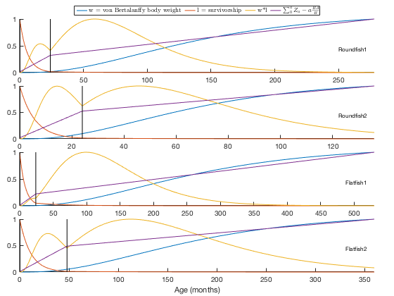
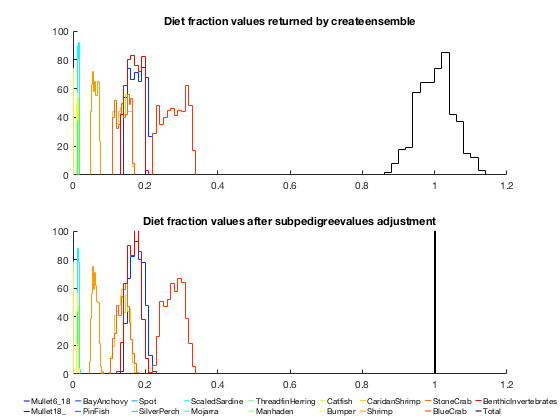
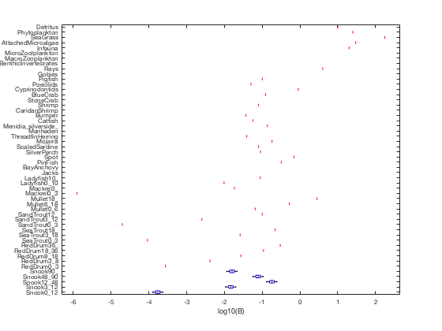
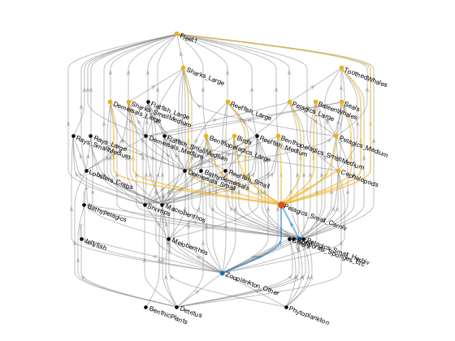

An overview of the ecopathmodel class
The ecopathmodel class offers a Matlab-based implementation of the popular Ecopath mass-balance algorithm. For information on the Ecopath concept, I refer you to the official Ecopath with Ecosim website: http://ecopath.org, as well as to the following journal articles:
- Christensen, V. & Pauly, D. ECOPATH II--a software for balancing steady-state ecosystem models and calculating network characteristics. Ecological Modelling 61, 169-185 (1992).
- Christensen, V. & Walters, C. J. Ecopath with Ecosim: methods, capabilities and limitations. Ecological Modelling 172, 109-139 (2004).
This overview assumes that you are already familiar with the Ecopath concept, and simply focuses on the use of this particular implementation. Please note that this code is intended to replicate only the Ecopath algorithm, not Ecosim, Ecospace, or any of the other Ecopath-derived functionalities within the full EwE software. Full documentation of the class and its associated methods can be accessed via the standard Matlab help format, e.g.:
help ecopathmodel doc ecopathmodel help ecopathmodel/ecopath
Contents
- The ecopathmodel class
- Importing Ecopath with Ecosim data
- Importing Rpath data
- Building an ecopathmodel object manually
- Filling in multi-stanza group parameters
- Calculating Ecopath mass balance
- Generating an ensemble of Ecopath models
- Calculating network indices
- Consolidating groups in a model
- Converting to graph objects
- ecopathmodel vs ecopathlite.m
The ecopathmodel class
The foundation of this package is the ecopathmodel class. The properties of an ecopathmodel object store the input data related to a particular modeled ecosystem; this is the data that would be entered under the "Input data" panel in Ecopath with Ecosim 6.4 (EwE6), and includes the definition of functional groups and fishing fleets and the connections between them, as well as the many parameters associated with each state variable and group-to-group flow process.
Currently, there two primary methods to create one of these objects:
- Load data from one of the other flavors of Ecopath (from an EwE6 database file, Rpath set of .csv files, or EwE-F set of text files)
- Build the model manually
If you have a prexisting model, the first method is preferable to manual transcription, since in my experience it is very easy to accidentally mis-transcribe a value, or transcribe it using less precision than in the original software. Building a model manually, on the other hand, has the advantage of providing a clear "paper trail" for all your model parameters, but you have to be careful that you fill in all the necessary values. While I provide a few basic checks of input, I'm not quite as good as EwE6 is at required vs. optional given the architecture of your specific ecosystem.
Personally, I prefer a combination of the two techniques, where possible. Use the EwE6 software during the initial data-gathering step of building an Ecopath model. That will allow you to take advantage of all the graphical utilities that warn you when parameters are blatantly incorrect. Once the model data is acceptable (not necessarily mass-balanced yet, but able to be checked for balance without popping up any warning messages), move over to this tool for project-specific parameter adjustments. This process allows you to preserve one copy of the base model while also keeping project-specific details clearly documented, and allowing you to comment on why parameters were changed from their original values (i.e. for balance, new data, reinterpretation of data, etc.).
Importing Ecopath with Ecosim data
The current version of Ecopath with Ecosim stores data in specially-formatted Microsoft Access database files, with the .EwEmdb extension.
Freeing model data from these database files is not exactly a straightforward proposition. The file format is proprietary and outdated, and typical use requires the proper (Windows-only) database drivers for access. Because of this, most Ecopath-related tools I'm aware of (like Rpath or EwE-F) request users to copy and paste data from EwE into various spreadsheets for import. I dislike this solution because it's vulnerable to human error and the process needs to be repeated any time you update the model in the EwE GUI. Also, there are a lot of smaller tables (pedigree lookup tables, stanza age-curve related stuff) that users tend to set and then forget about.
I say all this as a bit of an apology for the fact that in order to read these files into Matlab directly, you're going to need to install some third-party tools. If you're using Linux or Mac OS, you need the mdbtools set of command-line utilities. On Windows, you need python, the pyodbc module, and a Microsoft Access ODBC driver. For further details of this installation, type
help mdb2ecopathmodel
at the Matlab command prompt. Once you've gotten the appropriate software set up, you can run the following example.
This example reads in one of the example ecosystems that ships with the EwE6 software (and that I've included in this package under the examples folder):
Gen37 = mdb2ecopathmodel(fullfile('examples', 'Generic_37.EwEmdb'));
Warning: Some names changed to meet Matlab's variable name restrictions: Baleen whales -> BaleenWhales Toothed whales -> ToothedWhales Sharks, large -> Sharks_Large Sharks, small medium -> Sharks_SmallMedium Rays, large -> Rays_Large Rays, small medium -> Rays_SmallMedium Pelagics, large -> Pelagics_Large Pelagics, medium -> Pelagics_Medium Pelagics, small, carniv. -> Pelagics_Small_Carniv_ Pelagics, small, herbiv. -> Pelagics_Small_Herbiv_ Benthopelagics, large -> Benthopelagics_Large Benthopelagics, small medium -> Benthopelagics_SmallMedium Demersals, large -> Demersals_Large Demersals, medium -> Demersals_Medium Demersals, small -> Demersals_Small Reeffish, large -> Reeffish_Large Reeffish, medium -> Reeffish_Medium Flatfish, large -> Flatfish_Large Flatfish, small medium -> Flatfish_SmallMedium Reeffish, small -> Reeffish_Small Lobsters, crabs -> Lobsters_Crabs Softcorals, sponges, etc -> Softcorals_Sponges_Etc Zooplankton, other -> Zooplankton_Other Benthic plants -> BenthicPlants Warning: Non-zero value found for detrital P/B, replacing with zero (shifting to detpb column where empty): Detritus (NaN) Warning: Non-zero value found for a producer or detrital Q/B, replacing with zero: Phytoplankton (NaN) BenthicPlants (NaN) Detritus (NaN) Warning: Non-zero value found for a producer or detrital GE, replacing with zero: Phytoplankton (NaN) BenthicPlants (NaN) Detritus (NaN)
When importing, you'll usually encounter a few warnings like those seen above. EwE6 uses a few NaN-placeholders in its data files, which are then converted to 0s when it performs the Ecopath calculation. My code replaces those placeholders on reading, and lets you know. It also alters names, if necessary. If you're not happy with the "translation", you can alter the name, fleet, or stanza properties of the ecopathmodel object, and these changes will propagate to the rest of the tables. For example, the 'Pelagics, small, carniv.' group was converted to 'Pelagics_Small_Carniv_' to make it valid as a table row/column name; I personally don't like the trailing underscore, so I can remove it:
Gen37.name{11} = 'Pelagics_Small_Carniv';
Gen37.name{12} = 'Pelagics_Small_Herbiv';
Gen37.groupdata
ans =
b pb qb ee ge gs dtImp bh pp areafrac ba baRate immig emig emigRate stanza ageStart vbK detpb import
_____ ____ ___ ___ ____ ___ _____ ___ ____ ________ __ ______ _____ ____ ________ ______ ________ ___ _____ ______
BaleenWhales 0.001 0.03 30 NaN NaN 0.2 0 NaN 0 1 0 NaN 0 0 NaN 0 0 NaN NaN 0
ToothedWhales 0.002 0.05 40 NaN NaN 0.2 0 NaN 0 1 0 NaN 0 0 NaN 0 0 NaN NaN 0
Seals 0.003 0.07 50 NaN NaN 0.2 0 NaN 0 1 0 NaN 0 0 NaN 0 0 NaN NaN 0
Birds 0.001 0.1 100 NaN NaN 0.2 0 NaN 0 1 0 NaN 0 0 NaN 0 0 NaN NaN 0
Sharks_Large 0.1 0.3 NaN NaN 0.15 0.2 0 NaN 0 1 0 NaN 0 0 NaN 0 0 NaN NaN 0
Sharks_SmallMedium 0.3 0.6 NaN NaN 0.2 0.2 0 NaN 0 1 0 NaN 0 0 NaN 0 0 NaN NaN 0
Rays_Large 0.1 0.3 NaN NaN 0.15 0.2 0 NaN 0 1 0 NaN 0 0 NaN 0 0 NaN NaN 0
Rays_SmallMedium 0.3 0.6 NaN NaN 0.2 0.2 0 NaN 0 1 0 NaN 0 0 NaN 0 0 NaN NaN 0
Pelagics_Large 0.4 0.3 NaN NaN 0.2 0.2 0 NaN 0 1 0 NaN 0 0 NaN 0 0 NaN NaN 0
Pelagics_Medium 1.2 0.6 NaN NaN 0.25 0.2 0 NaN 0 1 0 NaN 0 0 NaN 0 0 NaN NaN 0
Pelagics_Small_Carniv 5 0.6 NaN NaN 0.25 0.2 0 NaN 0 1 0 NaN 0 0 NaN 0 0 NaN NaN 0
Pelagics_Small_Herbiv 2.5 0.6 NaN NaN 0.25 0.2 0 NaN 0 1 0 NaN 0 0 NaN 0 0 NaN NaN 0
Benthopelagics_Large 0.2 0.3 NaN NaN 0.25 0.2 0 NaN 0 1 0 NaN 0 0 NaN 0 0 NaN NaN 0
Benthopelagics_SmallMedium 0.4 0.6 NaN NaN 0.25 0.2 0 NaN 0 1 0 NaN 0 0 NaN 0 0 NaN NaN 0
Demersals_Large 0.5 0.3 NaN NaN 0.15 0.2 0 NaN 0 1 0 NaN 0 0 NaN 0 0 NaN NaN 0
Demersals_Medium 2 0.6 NaN NaN 0.2 0.2 0 NaN 0 1 0 NaN 0 0 NaN 0 0 NaN NaN 0
Demersals_Small 5 1 NaN NaN 0.25 0.2 0 NaN 0 1 0 NaN 0 0 NaN 0 0 NaN NaN 0
Reeffish_Large 0.1 0.3 NaN NaN 0.15 0.2 0 NaN 0 1 0 NaN 0 0 NaN 0 0 NaN NaN 0
Reeffish_Medium 0.5 0.6 NaN NaN 0.2 0.2 0 NaN 0 1 0 NaN 0 0 NaN 0 0 NaN NaN 0
Flatfish_Large 0.1 0.3 NaN NaN 0.15 0.2 0 NaN 0 1 0 NaN 0 0 NaN 0 0 NaN NaN 0
Flatfish_SmallMedium 1 0.8 NaN NaN 0.25 0.2 0 NaN 0 1 0 NaN 0 0 NaN 0 0 NaN NaN 0
Reeffish_Small 1 1 NaN NaN 0.25 0.2 0 NaN 0 1 0 NaN 0 0 NaN 0 0 NaN NaN 0
Bathypelagics 0.5 0.5 NaN NaN 0.25 0.2 0 NaN 0 1 0 NaN 0 0 NaN 0 0 NaN NaN 0
Bathydemersals 0.2 0.2 NaN NaN 0.3 0.2 0 NaN 0 1 0 NaN 0 0 NaN 0 0 NaN NaN 0
Jellyfish 1 10 NaN NaN 0.25 0.2 0 NaN 0 1 0 NaN 0 0 NaN 0 0 NaN NaN 0
Cephalopods 0.5 1 NaN NaN 0.3 0.2 0 NaN 0 1 0 NaN 0 0 NaN 0 0 NaN NaN 0
Shrimps 2 2.5 NaN NaN 0.3 0.2 0 NaN 0 1 0 NaN 0 0 NaN 0 0 NaN NaN 0
Lobsters_Crabs 0.5 2 NaN NaN 0.3 0.2 0 NaN 0 1 0 NaN 0 0 NaN 0 0 NaN NaN 0
Macrobenthos 10 2 NaN NaN 0.3 0.2 0 NaN 0 1 0 NaN 0 0 NaN 0 0 NaN NaN 0
Meiobenthos 15 10 NaN NaN 0.3 0.2 0 NaN 0 1 0 NaN 0 0 NaN 0 0 NaN NaN 0
Corals 0.1 1 1.5 NaN NaN 0.2 0 NaN 0.63 1 0 NaN 0 0 NaN 0 0 NaN NaN 0
Softcorals_Sponges_Etc 2 0.2 NaN NaN 0.3 0.2 0 NaN 0 1 0 NaN 0 0 NaN 0 0 NaN NaN 0
Krill 1 5 NaN NaN 0.25 0.2 0 NaN 0 1 0 NaN 0 0 NaN 0 0 NaN NaN 0
Zooplankton_Other 10 30 NaN NaN 0.25 0.4 0 NaN 0 1 0 NaN 0 0 NaN 0 0 NaN NaN 0
Phytoplankton 15 150 0 NaN 0 0 0 NaN 1 1 0 NaN 0 0 NaN 0 0 NaN NaN 0
BenthicPlants 2 10 0 NaN 0 0 0 NaN 1 1 0 NaN 0 0 NaN 0 0 NaN NaN 0
Detritus 100 0 0 NaN 0 0 0 NaN 2 1 0 NaN 0 0 NaN 0 0 NaN NaN 0
Importing Rpath data
Rpath is an R-based implementation of Ecopath with Ecosim, written by Sean Lucey and Kerim Aydin. It is currently in beta-testing and available for download on GitHub: https://github.com/slucey/RpathDev. Rpath primarily bases its calculations around R data tables, but it also provides some utilities to read and write parameter data from .csv files. In order to maintain some consistency across all the Ecopath flavors, I've adopted this format as an alternative input format. The rpath2ecopathmodel and ecopathmodel2rpath methods in this package perform the same reading and writing tasks as the read.rpath.params and write.rpath.params functions in Rpath, respectively.
This file format is also an option if you cannot get the direct-read EwE6 function (described above) working on your computer. I've included Rpath-formatted versions of both the Generic 37 and Tampa Bay models that are used in this overview in the example folder (in examples/Gen37 and examples/TampBay, respectively). You can use these as templates to copy and paste your own model into the proper format.
The following example reads in the model described in the Rpath vignette (the rpath_example.R script, found in the examples folder, holds the code to install Rpath and then recreate these files in R).
basefile = fullfile('examples', 'REcoPreStanza', 'REco_model.csv'); dietfile = fullfile('examples', 'REcoPreStanza', 'REco_diet.csv'); stanfile = fullfile('examples', 'REcoPreStanza', 'REco_stanzas.csv'); sgrpfile = fullfile('examples', 'REcoPreStanza', 'REco_stanza_groups.csv'); REco = rpath2ecopathmodel(basefile, dietfile, 'stanzafile', stanfile, ... 'stanzagroupfile', sgrpfile);
Warning: Variable names were modified to make them valid MATLAB identifiers. Warning: Detritus groups found with missing biomass; replacing with 0: Detritus (NaN) Discards (NaN) Warning: Non-zero value found for detrital P/B, replacing with zero (shifting to detpb column where empty): Detritus (NaN) Discards (NaN) Warning: Non-zero value found for a producer or detrital Q/B, replacing with zero: Phytoplankton (NaN) Detritus (NaN) Discards (NaN) Warning: Non-zero value found for a producer or detrital GE, replacing with zero: Phytoplankton (NaN) Detritus (NaN) Discards (NaN) Warning: NaN found in detritus import, replacing with 0: Seabirds (NaN) Whales (NaN) Seals (NaN) JuvRoundfish1 (NaN) AduRoundfish1 (NaN) JuvRoundfish2 (NaN) AduRoundfish2 (NaN) JuvFlatfish1 (NaN) AduFlatfish1 (NaN) JuvFlatfish2 (NaN) AduFlatfish2 (NaN) OtherGroundfish (NaN) Foragefish1 (NaN) Foragefish2 (NaN) OtherForagefish (NaN) Megabenthos (NaN) Shellfish (NaN) Macrobenthos (NaN) Zooplankton (NaN) Phytoplankton (NaN)
Again, this function will typically issue several warnings related to the differing ways this code and Rpath use NaNs vs 0s as placeholders for certain parameters. Rpath also assigns pedigree values to all groups, even non-leading stanza groups; my code doesn't allow that so those values are stripped out of the pedigree table and a warning issued. (Really, I recommend leaving the pedigree table input out, as I did in the preceding line, since Rpath is only using those values as placeholders at the moment. I've written the code to be able to read these numbers if you insist; this may change, or some translation calculations may be added, as Rpath development continues, so use this wih caution for now).
Note that Rpath adds additional data to these files as its calculations progress. This set of files was produced before any calculations (including stanza-related ones) were performed.
To reverse the process and send data from Matlab to Rpath, use ecopathmodel2rpath:
if ~exist(fullfile('examples', 'Gen37'), 'dir') mkdir('examples', 'Gen37'); end ecopathmodel2rpath(Gen37, fullfile('examples', 'Gen37', 'gen37'));
This can be read into R via
Gen37 = read.rpath.params('examples/Gen37/gen37_model.csv', 'examples/Gen37/gen37_diet.csv')Building an ecopathmodel object manually
As I mentioned above, I don't really recommend that you start a model from scratch using just this tool. My focus when developing this code was to increase the flexibility of the Ecopath algorithm, not to replicate the EwE6 GUI capabilities (including its many data validation checks).
However, Ecopath models are very often published in peer-reviewed journals or technical reports without accompanying data files. In these cases, you many need to manually transcribe the data from various printed tables in order to carry out additional calculations.
For this example, I'm going to use the Eastern Pacific Subarctic Gyre ecosystem model, which is the one I happened to be working with during the development of this class, and which required manual transcription. The details of that model were published in
- Aydin KY, McFarlane GA, King JR, Megrey BA (2003) The BASS/MODEL report on trophic models of the Subarctic Pacific Basin ecosystems. PICES Sci Rep 25
Start by creating an empty ecopathmodel object. For this, you need 3 parameters:
- number of total groups
- number of live groups
- number of fishing gears/fleets.
While not required, it's highly recommended that you also add the names of all groups, fleets, and stanzas, since that data is used to set up and label all the table columns and rows, and the type of each group (i.e. whether consumer, producer, or mixotroph), since that is used to validate other parameters' values as they're added.
names = {...
'Sperm whales'
'Toothed whales'
'Fin whales'
'Sei whales'
'Northern fur seals'
'Elephant seals'
'Dall''s porpoises'
'Pacific white-sided dolphins'
'Northern right whale dolphins'
'Albatross'
'Shearwaters'
'Storm Petrels'
'Kittiwakes'
'Fulmars'
'Puffins'
'Skuas'
'Jaegers'
'Sharks'
'Large gonatid squid'
'Boreal clubhook squid'
'Neon flying squid'
'Sockeye salmon'
'Chum salmon'
'Pink salmon'
'Coho salmon'
'Chinook salmon'
'Steelhead'
'Pomfret'
'Saury'
'Pelagic forage fish'
'Micronektonic squid'
'Mesopelagic fish'
'Large jellyfish'
'Ctenophores'
'Salps'
'Chaetognaths'
'Sergestid shrimp'
'Misc predatory zooplankton'
'Amphipods'
'Pteropods'
'Euphausiids'
'Copepods'
'Microzooplankton'
'Bacteria'
'Large phytoplankton'
'Small phytoplankton'
'DNH3'
'POM'};
ngroup = length(names);
ngear = 1; % Ecopath requires at least 1, even if it catches nothing
nlive = ngroup - 2; % DNH3 and POM are detrital
isprod = ismember(names, {'Large phytoplankton', 'Small phytoplankton'});
isdet = ismember(names, {'DNH3', 'POM'});
pp = zeros(ngroup,1); % 0 = consumer
pp(isprod) = 1; % 1 = producer
pp(isdet) = 2; % 2 = detritus
% Names of groups, fleets, and stanzas must meet Matlab's variable name
% restrictions, since they will be used as table row/column labels. To
% meet this requirement, here I capitalize all words and then strip out
% spaces and special characters.
names = regexprep(names,'(\<[a-z])','${upper($1)}');
names = regexprep(names, '[\s-\.'']', '');
% Now create empty ecopathmodel
Esa = ecopathmodel(ngroup, nlive, ngear, 'groups', names, 'pp', pp)
Esa =
ecopathmodel with properties:
ngroup: 48
nlive: 46
ngear: 1
name: {48x1 cell}
fleet: {'fleet1'}
groupdata: [48x20 table]
dc: [48x48 table]
landing: [48x1 table]
discard: [48x1 table]
df: [48x2 table]
discardFate: [1x2 table]
stanza: {}
stanzadata: [0x5 table]
pedigree: [0x4 table]
The ecopathmodel object properties include several table arrays. You can refer to the ecopathmodel property descriptions (help ecopathmodel) to see what parameters are stored in each table. The variable names are all based on those used in EwE6, so they should be familiar to most Ecopath users.
Now it's time to start adding the data. We'll start with the groupdata table, which holds all the group-related parameters.
Esa.groupdata
ans =
b pb qb ee ge gs dtImp bh pp areafrac ba baRate immig emig emigRate stanza ageStart vbK detpb import
___ ___ ___ ___ ___ ___ _____ ___ __ ________ ___ ______ _____ ____ ________ ______ ________ ___ _____ ______
SpermWhales NaN NaN NaN NaN NaN NaN 0 NaN 0 1 NaN NaN NaN NaN NaN NaN NaN NaN NaN 0
ToothedWhales NaN NaN NaN NaN NaN NaN 0 NaN 0 1 NaN NaN NaN NaN NaN NaN NaN NaN NaN 0
FinWhales NaN NaN NaN NaN NaN NaN 0 NaN 0 1 NaN NaN NaN NaN NaN NaN NaN NaN NaN 0
SeiWhales NaN NaN NaN NaN NaN NaN 0 NaN 0 1 NaN NaN NaN NaN NaN NaN NaN NaN NaN 0
NorthernFurSeals NaN NaN NaN NaN NaN NaN 0 NaN 0 1 NaN NaN NaN NaN NaN NaN NaN NaN NaN 0
ElephantSeals NaN NaN NaN NaN NaN NaN 0 NaN 0 1 NaN NaN NaN NaN NaN NaN NaN NaN NaN 0
DallSPorpoises NaN NaN NaN NaN NaN NaN 0 NaN 0 1 NaN NaN NaN NaN NaN NaN NaN NaN NaN 0
PacificWhiteSidedDolphins NaN NaN NaN NaN NaN NaN 0 NaN 0 1 NaN NaN NaN NaN NaN NaN NaN NaN NaN 0
NorthernRightWhaleDolphins NaN NaN NaN NaN NaN NaN 0 NaN 0 1 NaN NaN NaN NaN NaN NaN NaN NaN NaN 0
Albatross NaN NaN NaN NaN NaN NaN 0 NaN 0 1 NaN NaN NaN NaN NaN NaN NaN NaN NaN 0
Shearwaters NaN NaN NaN NaN NaN NaN 0 NaN 0 1 NaN NaN NaN NaN NaN NaN NaN NaN NaN 0
StormPetrels NaN NaN NaN NaN NaN NaN 0 NaN 0 1 NaN NaN NaN NaN NaN NaN NaN NaN NaN 0
Kittiwakes NaN NaN NaN NaN NaN NaN 0 NaN 0 1 NaN NaN NaN NaN NaN NaN NaN NaN NaN 0
Fulmars NaN NaN NaN NaN NaN NaN 0 NaN 0 1 NaN NaN NaN NaN NaN NaN NaN NaN NaN 0
Puffins NaN NaN NaN NaN NaN NaN 0 NaN 0 1 NaN NaN NaN NaN NaN NaN NaN NaN NaN 0
Skuas NaN NaN NaN NaN NaN NaN 0 NaN 0 1 NaN NaN NaN NaN NaN NaN NaN NaN NaN 0
Jaegers NaN NaN NaN NaN NaN NaN 0 NaN 0 1 NaN NaN NaN NaN NaN NaN NaN NaN NaN 0
Sharks NaN NaN NaN NaN NaN NaN 0 NaN 0 1 NaN NaN NaN NaN NaN NaN NaN NaN NaN 0
LargeGonatidSquid NaN NaN NaN NaN NaN NaN 0 NaN 0 1 NaN NaN NaN NaN NaN NaN NaN NaN NaN 0
BorealClubhookSquid NaN NaN NaN NaN NaN NaN 0 NaN 0 1 NaN NaN NaN NaN NaN NaN NaN NaN NaN 0
NeonFlyingSquid NaN NaN NaN NaN NaN NaN 0 NaN 0 1 NaN NaN NaN NaN NaN NaN NaN NaN NaN 0
SockeyeSalmon NaN NaN NaN NaN NaN NaN 0 NaN 0 1 NaN NaN NaN NaN NaN NaN NaN NaN NaN 0
ChumSalmon NaN NaN NaN NaN NaN NaN 0 NaN 0 1 NaN NaN NaN NaN NaN NaN NaN NaN NaN 0
PinkSalmon NaN NaN NaN NaN NaN NaN 0 NaN 0 1 NaN NaN NaN NaN NaN NaN NaN NaN NaN 0
CohoSalmon NaN NaN NaN NaN NaN NaN 0 NaN 0 1 NaN NaN NaN NaN NaN NaN NaN NaN NaN 0
ChinookSalmon NaN NaN NaN NaN NaN NaN 0 NaN 0 1 NaN NaN NaN NaN NaN NaN NaN NaN NaN 0
Steelhead NaN NaN NaN NaN NaN NaN 0 NaN 0 1 NaN NaN NaN NaN NaN NaN NaN NaN NaN 0
Pomfret NaN NaN NaN NaN NaN NaN 0 NaN 0 1 NaN NaN NaN NaN NaN NaN NaN NaN NaN 0
Saury NaN NaN NaN NaN NaN NaN 0 NaN 0 1 NaN NaN NaN NaN NaN NaN NaN NaN NaN 0
PelagicForageFish NaN NaN NaN NaN NaN NaN 0 NaN 0 1 NaN NaN NaN NaN NaN NaN NaN NaN NaN 0
MicronektonicSquid NaN NaN NaN NaN NaN NaN 0 NaN 0 1 NaN NaN NaN NaN NaN NaN NaN NaN NaN 0
MesopelagicFish NaN NaN NaN NaN NaN NaN 0 NaN 0 1 NaN NaN NaN NaN NaN NaN NaN NaN NaN 0
LargeJellyfish NaN NaN NaN NaN NaN NaN 0 NaN 0 1 NaN NaN NaN NaN NaN NaN NaN NaN NaN 0
Ctenophores NaN NaN NaN NaN NaN NaN 0 NaN 0 1 NaN NaN NaN NaN NaN NaN NaN NaN NaN 0
Salps NaN NaN NaN NaN NaN NaN 0 NaN 0 1 NaN NaN NaN NaN NaN NaN NaN NaN NaN 0
Chaetognaths NaN NaN NaN NaN NaN NaN 0 NaN 0 1 NaN NaN NaN NaN NaN NaN NaN NaN NaN 0
SergestidShrimp NaN NaN NaN NaN NaN NaN 0 NaN 0 1 NaN NaN NaN NaN NaN NaN NaN NaN NaN 0
MiscPredatoryZooplankton NaN NaN NaN NaN NaN NaN 0 NaN 0 1 NaN NaN NaN NaN NaN NaN NaN NaN NaN 0
Amphipods NaN NaN NaN NaN NaN NaN 0 NaN 0 1 NaN NaN NaN NaN NaN NaN NaN NaN NaN 0
Pteropods NaN NaN NaN NaN NaN NaN 0 NaN 0 1 NaN NaN NaN NaN NaN NaN NaN NaN NaN 0
Euphausiids NaN NaN NaN NaN NaN NaN 0 NaN 0 1 NaN NaN NaN NaN NaN NaN NaN NaN NaN 0
Copepods NaN NaN NaN NaN NaN NaN 0 NaN 0 1 NaN NaN NaN NaN NaN NaN NaN NaN NaN 0
Microzooplankton NaN NaN NaN NaN NaN NaN 0 NaN 0 1 NaN NaN NaN NaN NaN NaN NaN NaN NaN 0
Bacteria NaN NaN NaN NaN NaN NaN 0 NaN 0 1 NaN NaN NaN NaN NaN NaN NaN NaN NaN 0
LargePhytoplankton NaN NaN 0 NaN 0 0 0 NaN 1 1 NaN NaN NaN NaN NaN NaN NaN NaN NaN 0
SmallPhytoplankton NaN NaN 0 NaN 0 0 0 NaN 1 1 NaN NaN NaN NaN NaN NaN NaN NaN NaN 0
DNH3 0 0 0 NaN 0 0 NaN NaN 2 1 NaN NaN NaN NaN NaN NaN NaN NaN NaN 0
POM 0 0 0 NaN 0 0 NaN NaN 2 1 NaN NaN NaN NaN NaN NaN NaN NaN NaN 0
The first several columns of the groupdata table correspond to the "Basic input" panel in EwE6. These, along with diet fractions, are the parameters most likely to be published in any Ecopath-related study. In this case, the values come straight from Table B6 in the Aydin et al., 2003 report.
You'll notice a few warning messages printed to the screen as I add the data into the appropriate tables; those are letting me know that I tried to add invalid values to certain locations. In this case, the discrepancy is that the printed table left some values blank where internally they're actually supposed to be 0; those incorrect NaNs are replaced with the appropriate 0s by the data validator.
% Columns are trophic level (TL), biomass (B, t/km2), production/biomass % (P/B, 1/year), consumption/biomass (Q/B, 1/year), ecotrophic efficiency % (EE, proportion), growth efficiency (PC, proportion) biomass accumulation % (BA t/km2/year), unassimilated respiration (UnAss, proportion) and the % proportion of detritus flowing to NH3 and POM, respectively tableB6 = [... 5.4 0.000929 0.0596 6.61 0 0.00902 0 0.2 0.5 0.5 5.2 0.000028 0.0252 11.16 0 0.00226 0 0.2 0.5 0.5 4.1 0.027883 0.02 4.56 0.12912 0.00439 0 0.2 0.5 0.5 4.1 0.005902 0.02 6.15 0.1358 0.00325 0 0.2 0.5 0.5 5.2 0.000246 0.235 39.03 0.01083 0.00602 0 0.2 0.5 0.5 5.2 0.00043 0.368 11.08 0.00692 0.03321 0 0.2 0.5 0.5 5.2 0.00598636 0.1 27.47 0.02546 0.00364 0 0.2 0.5 0.5 5.2 0.00396248 0.14 25.83 0.01819 0.00542 0 0.2 0.5 0.5 5.3 0.00389728 0.16 24.14 0.01592 0.00663 0 0.2 0.5 0.5 5.9 0.00004 0.05 81.59 0.05043 0.00061 0 0.2 0.5 0.5 4.7 0.0004 0.1 100.13 0.02547 0.001 0 0.2 0.5 0.5 4.6 0.000056 0.1 152.08 0.02546 0.00066 0 0.2 0.5 0.5 4.6 0.000052 0.1 123 0.02549 0.00081 0 0.2 0.5 0.5 4.9 0.000074 0.1 100.26 0.02557 0.001 0 0.2 0.5 0.5 4.7 0.000058 0.1 104.33 0.02535 0.00096 0 0.2 0.5 0.5 4.8 0.000054 0.075 96.6 0.0338 0.00078 0 0.2 0.5 0.5 4.8 0.000038 0.075 96.6 0.03388 0.00078 0 0.2 0.5 0.5 5.4 0.05 0.2 10.95 0 0.01826 0 0.2 0.5 0.5 4.2 0.03 2.555 7.3 0.19453 0.35 0 0.2 0.5 0.5 4.9 0.012 2.555 7.3 0.19453 0.35 0 0.2 0.5 0.5 5.3 0.45 2.555 6.205 0.91095 0.41176 0 0.2 0.5 0.5 4.3 0.08965573 1.27 10.13 0.32249 0.12537 0 0.2 0.5 0.5 3.7 0.05413587 1.93 14.51 0.21221 0.13301 0 0.2 0.5 0.5 4.2 0.02326662 3.37 18.49 0.12153 0.18226 0 0.2 0.5 0.5 4.9 0.00445349 2.47 16.55 0.16581 0.14924 0 0.2 0.5 0.5 4.9 0.00930315 0.8 5.33333 0.51195 0.15 0 0.2 0.5 0.5 4.9 0.0093 0.8 5.33333 0.51212 0.15 0 0.2 0.5 0.5 4.8 0.21 0.75 3.75 0.54697 0.2 0 0.2 0.5 0.5 3.8 0.45 1.6 7.9 0.5545 0.20253 0 0.2 0.5 0.5 3.9 0.92156 1.5 5 0.9 0.3 0 0.2 0.5 0.5 3.9 0.87135 3 15 0.9 0.2 0 0.2 0.5 0.5 3.9 4.5 0.9 3 0.16002 0.3 0 0.2 0.5 0.5 3.6 4 3 10 0 0.3 0 0.2 0.5 0.5 2.7 9.1 4 110 0.05269 0.03636 0 0.2 0.5 0.5 2.7 8 9 30 0.02371 0.3 0 0.2 0.5 0.5 3.5 6.6 2.555 12.045 0.27638 0.21212 0 0.2 0.5 0.5 3.5 5 2.555 12.045 0.18813 0.21212 0 0.2 0.5 0.5 3.5 5.0688 2.555 12.045 0.18871 0.21212 0 0.2 0.5 0.5 3.1 10.1376 2.555 12.045 0.64429 0.21212 0 0.2 0.5 0.5 3.1 10.1376 2.555 12.045 0.53491 0.21212 0 0.2 0.5 0.5 3.1 25.344 2.555 12.045 0.53934 0.21212 0 0.2 0.5 0.5 2.4 34.848 23.725 112.42 0.88106 0.21104 0 0.2 0.5 0.5 2.3 35 48.91 233.235 0.99619 0.2097 0 0.2 0.5 0.5 2 122.9031 18.45 25 0.9 0.738 0 0.2 0.5 0.5 1 69.7 42.34 NaN 0.67337 NaN 0 NaN 0.5 0.5 1 76 129.575 NaN 0.77256 NaN 0 NaN 0.5 0.5 1 NaN NaN NaN 0.42757 NaN 0 NaN 0 0 1 NaN NaN NaN 0.42757 NaN 0 NaN 0 0]; % Plug these values into the appropriate groupdata columns: Esa.groupdata.b = tableB6(:,2); Esa.groupdata.pb = tableB6(:,3); Esa.groupdata.qb = tableB6(:,4); Esa.groupdata.ee = tableB6(:,5); Esa.groupdata.ge = tableB6(:,6); Esa.groupdata.ba = tableB6(:,7); Esa.groupdata.gs = tableB6(:,8); % The detrital flows (last two columns of the published table) go into the % df table: Esa.df.DNH3 = tableB6(:,9); Esa.df.POM = tableB6(:,10); % Certain values in that table were marked in gray, indicating that they % were calculated by the Ecopath mass-balance calculation, not provided as % input. We'll get rid of those values for now: nob = [30 31 44]; noqb = 26:28; noee = [1:29 32:43 45:48]; noge = [1:25 29:48]; Esa.groupdata.b(nob) = NaN; Esa.groupdata.bh(nob) = NaN; Esa.groupdata.qb(noqb) = NaN; Esa.groupdata.ee(noee) = NaN; Esa.groupdata.ge(noge) = NaN;
Warning: Detritus groups found with missing biomass; replacing with 0: DNH3 (NaN) POM (NaN) Warning: Non-zero value found for detrital P/B, replacing with zero (shifting to detpb column where empty): DNH3 (NaN) POM (NaN) Warning: Non-zero value found for a producer or detrital Q/B, replacing with zero: LargePhytoplankton (NaN) SmallPhytoplankton (NaN) DNH3 (NaN) POM (NaN) Warning: Non-zero value found for a producer or detrital GE, replacing with zero: LargePhytoplankton (NaN) SmallPhytoplankton (NaN) DNH3 (NaN) POM (NaN) Warning: Non-zero value found for a producer or detrital GS, replacing with zero: LargePhytoplankton (NaN) SmallPhytoplankton (NaN) DNH3 (NaN) POM (NaN) Warning: Non-zero value found for a producer or detrital GE, replacing with zero: LargePhytoplankton (NaN) SmallPhytoplankton (NaN) DNH3 (NaN) POM (NaN)
Next up, diet fractions. The diet data for this model are found in Table B8 of the report (all 5 pages of it... can we all agree that publishing sparse matrices as giant tables of mostly empty space across multiple pages is a less than ideal way to share data? Can we all stop doing this? Pretty please? Sorry, I digress...) Diet data was copied and pasted from Table B8 of the report into a csv file, which I've pasted here to minimize the number of supporting files needed for this example.
dietcsv = {...
',,,,,,,,,,,,,,,,,,,,,,,,,,,,,,,,,,,,,,,,,,,,,,,,'
',,,,,,,,,,,,,,,,,,,,,,,,,,,,,,,,,,,,,,,,,,,,,,,,'
',0.22725,,,,,,,,,,,,,,,,,,,,,,,,,,,,,,,,,,,,,,,,,,'
',0.04811,,,,,,,,,,,,,,,,,,,,,,,,,,,,,,,,,,,,,,,,,,'
',0.002,,,,,,,,,,,,,,,,,,,,,,,,,,,,,,,,,,,,,,,,,,'
',0.00351,,,,,,,,,,,,,,,,,,,,,,,,,,,,,,,,,,,,,,,,,,'
',0.04879,,,,,,,,,,,,,,,,,,,,,,,,,,,,,,,,,,,,,,,,,,'
',0.03229,,,,,,,,,,,,,,,,,,,,,,,,,,,,,,,,,,,,,,,,,,'
',0.03176,,,,,,,,,,,,,,,,,,,,,,,,,,,,,,,,,,,,,,,,,,'
',0.00032,,,,,,,,,,,,,,,,,,,,,,,,,,,,,,,,,,,,,,,,,,'
',0.00326,,,,,,,,,,,,,,,,,,,,,,,,,,,,,,,,,,,,,,,,,,'
',0.00046,,,,,,,,,,,,,,,,,,,,,,,,,,,,,,,,,,,,,,,,,,'
',0.00042,,,,,,,,,,,,,,,,,,,,,,,,,,,,,,,,,,,,,,,,,,'
',0.00061,,,,,,,,,,,,,,,,,,,,,,,,,,,,,,,,,,,,,,,,,,'
',0.00047,,,,,,,,,,,,,,,,,,,,,,,,,,,,,,,,,,,,,,,,,,'
',0.00044,,,,,,,,,,,,,,,,,,,,,,,,,,,,,,,,,,,,,,,,,,'
',0.00031,,,,,,,,,,,,,,,,,,,,,,,,,,,,,,,,,,,,,,,,,,'
',,,,,,,,,,,,,,,,,,,,,,,,,,,,,,,,,,,,,,,,,,,'
'0.02287,0.00305,0.001524,0.001524,0.00915,0.0122,0.01372,0.00762,0.01524,0.04573,,,,,,,,0.01782,,,,,,,,,,,,,,,,,,,,,,,,,,'
'0.00915,0.00122,0.000609,0.000609,0.00366,0.00488,0.00549,0.00305,0.0061,0.01829,,,,,,,,0.00713,,,,,,,,,,,,,,,,,,,,,,,,,,'
'0.34299,0.04573,0.022866,0.022866,0.1372,0.18293,0.20579,0.11433,0.22866,0.68598,,,,,,,,0.26724,,,0.295,,,,,,,,,,,,,,,,,,,,,,,'
'0.00208,0.0249,0.001245,0.001245,0.02988,0.01132,0.01494,0.03984,0.00498,,,,,,,,,0.05324,,,,,,,,,,,,,,,,,,,,,,,,,,'
'0.00125,0.01504,0.000752,0.000752,0.01804,0.00683,0.00902,0.02406,0.00301,,,,,,,,,0.03215,,,,,,,,,,,,,,,,,,,,,,,,,,'
'0.00054,0.00646,0.000323,0.000323,0.00775,0.00294,0.00388,0.01034,0.00129,,,,,,,,,0.01382,,,,,,,,,,,,,,,,,,,,,,,,,,'
'0.0001,0.00124,6.19E-05,6.19E-05,0.00148,0.00056,0.00074,0.00198,0.00025,,,,,,,,,0.00264,,,,,,,,,,,,,,,,,,,,,,,,,,'
'0.00022,0.00258,0.000129,0.000129,0.0031,0.00117,0.00155,0.00413,0.00052,,,,,,,,,0.00552,,,,,,,,,,,,,,,,,,,,,,,,,,'
'0.00022,0.00258,0.000129,0.000129,0.0031,0.00117,0.00155,0.00413,0.00052,,,,,,,,,0.00552,,,,,,,,,,,,,,,,,,,,,,,,,,'
'0.00486,0.05833,0.002917,0.002917,0.06999,0.056,0.035,0.09332,0.01167,,,,,,,,,0.12471,,,,,,,,,,,,,,,,,,,,,,,,,,'
'0.01042,0.12498,0.00625,0.00625,0.14998,0.12,0.07499,0.19997,0.025,0.1,0.275,0.05,0.4,,0.4,0.5,0.5,0.26724,,,0.058,,,,,,,0.04,,,,,,,,,,,,,,,,'
'0.126,0.264,0.076,0.076,0.267,0.2,0.208,0.172,0.053,0.1,0.275,0.05,0.4,0.04,0.4,0.5,0.5,0.103,0.01,0.01,0.319,0.10982,0.00802,0.068096,0.367206,0.367206,0.367206,,,,,,,,,,,,,,,,,'
'0.375,0.05,0.025,0.025,0.15,0.4,0.225,0.225,0.25,0.05,0.3,0.6,,0.96,0.1,,,0.1,0.33,0.99,0.223,0.07968,0.03929,0.034823,0.205691,0.205691,0.205691,0.75,,,0.05,,,,,,,,,,,,,'
'0.10416,,0.062499,0.062499,0.15,,0.2,0.1,0.4,,,,,,,,,,,,0.105,0.10982,0.00802,0.068096,0.367206,0.367206,0.367206,0.08,,,,,,,,,,,,,,,,'
',,,,,,,,,,,,,,,,,,,,,,,,,,,,,,,,,,,,,,,,,,,'
',,,,,,,,,,,,,,,,,,,,,0.01609,0.20285,0.003826,7.31E-05,7.31E-05,7.31E-05,,,,,,0.04356,,,,,,,,,,,'
',,,,,,,,,,,,,,,,,,,,,0.01609,0.20285,0.003826,7.31E-05,7.31E-05,7.31E-05,,,,,,0.03829,,,,,,,,,,,'
',,0.054357,0.05435,,,,,,,,,,,,,,,0.04484,,,,0.00043,,,,,0.01,0.05298,0.06795,0.06455,0.15,0.03159,,,,,,,,,,,'
',,0.041179,0.041179,,,,,,,,,,,,,,,0.03397,,,,,,,,,0.01,0.04014,0.05147,0.0489,0.03,0.02393,,,,,,,,,,,'
',,0.041746,0.041746,,,,,,,,,,,,,,,0.03444,,,0.00171,0.01474,8.64E-06,,,,0.01,0.04069,0.05218,0.04957,0.03,0.02426,,,,,,,,,,,'
',,0.083492,0.083492,,,,,,,0.0189,0.0378,0.0252,,0.0126,,,,0.06888,,,0.29328,0.07363,0.32162,0.008047,0.008047,0.008047,0.03,0.08138,0.10437,0.09915,0.24,0.04852,,,0.04444,0.04444,0.04444,,,,,,'
',,0.083492,0.083492,,,,,,,0.0189,0.0378,0.0252,,0.0126,,,,0.06888,,,0.23976,0.06719,0.440933,0.04623,0.04623,0.04623,0.01,0.08138,0.10437,0.09915,0.031,0.04852,,,0.04444,0.04444,0.04444,,,,,,'
',,0.20873,0.20873,,,,,,,0.04724,0.09449,0.06299,,0.0315,,,,0.1722,,,0.10058,0.08491,0.038951,0.002736,0.002736,0.002736,0.05,0.20344,0.26091,0.24787,0.171,0.12131,,,0.11111,0.11111,0.11111,,,,,,'
',,0.287004,0.287004,,,,,,,0.06496,0.12992,0.08661,,0.04331,,,,0.23678,,,0.03318,0.29806,0.019816,0.002736,0.002736,0.002736,0.01,0.5,0.35875,0.34082,0.348,0.62,0.25,0.25,0.8,0.8,0.8,0.4,0.4,0.4,,,'
',,,,,,,,,,,,,,,,,,,,,,,,,,,,,,,,,0.25,0.25,,,,0.4,0.4,0.4,0.3,,'
',,,,,,,,,,,,,,,,,,,,,,,,,,,,,,,,,0.25,0.25,,,,,,,,0.25,'
',,,,,,,,,,,,,,,,,,,,,,,,,,,,,,,,,0.25,0.25,,,,0.2,0.2,0.2,0.4,,'
',,,,,,,,,,,,,,,,,,,,,,,,,,,,,,,,,,,,,,,,,0.3,0.75,'
',,,,,,,,,,,,,,,,,,,,,,,,,,,,,,,,,,,,,,,,,,,0.5'
',,,,,,,,,,,,,,,,,,,,,,,,,,,,,,,,,,,,,,,,,,,0.5'
};
dcfile = [tempname '.csv'];
fid = fopen(dcfile, 'w+');
fprintf(fid, '%s\n', dietcsv{:});
fclose(fid);
dc = csvread(dcfile);
delete(dcfile);
One of the reasons pdf tables are a terrible way to share data: rounding error. In this case, some values must have been rounded for display; diet data (plus import) should always sum to 1 for each predator, and in this case it doesn't.
sum(dc,1)
ans =
Columns 1 through 6
0.99986 1.0001 1.0003 1.0003 1.0003 1
Columns 7 through 12
0.99967 0.99977 1.0002 1 1 1
Columns 13 through 18
1 1 1 1 1 1
Columns 19 through 24
0.99999 1 1 1 0.99999 1
Columns 25 through 30
1 1 1 1 1 1
Columns 31 through 36
1 1 0.99998 1 1 0.99999
Columns 37 through 42
0.99999 0.99999 1 1 1 1
Columns 43 through 48
1 1 0 0 0 0
We'll normalize to get a proper diet fraction table.
dc = bsxfun(@rdivide, dc, sum(dc,1)); Esa.dc(:,:) = num2cell(dc);
There are a few remaining variables that weren't really discussed in the Aydin et al. report, but are necessary to replicate their Ecopath calculations.
% Detritus import: assume to be 0 for both detritus groups Esa.groupdata.dtImp(isdet) = zeros(ngroup-nlive,1); % Immigration/emigration: Assume 0 Esa.groupdata.immig = zeros(ngroup,1); Esa.groupdata.emig = zeros(ngroup,1); % Fisheries landings and discards: Assume no fisheries loss in this model. Esa.landing(:,:) = num2cell(zeros(ngroup,ngear)); Esa.discard(:,:) = num2cell(zeros(ngroup,ngear)); % Discard fate: Values don't really matter, since there are no discards to % redirect, but as a placeholder, split this between the two detrital % groups. Esa.discardFate(:,:) = {0.5, 0.5}; % Finally, the detritus groups are currently listed with no biomass or % import. The Aydin et al., 2003 work used a precursor to the Rpath model % for its calculations, rather than the more familiar EwE platform. One % difference between Rpath and EwE is that Rpath calculates detrital pool % biomass based on an assumed overturning rate. This Matlab package also % allows that possibility, via the |detpb| column. However, the rate used % in this particular study wasn't published, so I took the easy way out and % simply substituted some approximate values (for Ecopath balance purposes, % the only constraint of detrital biomass is that it be large enough to % cover detritivore diet, and otherwise it does not affect the results). Esa.groupdata.b(isdet) = ones(ngroup-nlive,1)*50;
At this point, we have a fully-populated ecopathmodel object
Filling in multi-stanza group parameters
Multi-stanza groups in an Ecopath model represent different life stages of a single functional group. In time-dynamic models such as Ecosim, growth leads to a flux of biomass from younger groups to older groups. Although this tool does not explicitly include Ecosim-like calculations, I do strive to maintain consistency with EwE6 and Rpath, which means that multistanza groups must match the stable age distibution requirements.
The primary ecopathmodel method for calculating stanza-related parameters is the calcstanza method, which fills in the biomass (b), comsumption rates (qb), and biomass accumulation rates (ba) for all groups that are part of a multistanza set.
As an example, let's look at the REco model that we read in above. This model includes 4 multi-stanza sets, with two groups apeice:
REco.stanzadata REco.groupdata
ans =
stanzaID BABsplit Btot WmatWinf RecPower
________ ________ ____ ________ ________
Roundfish1 1 NaN NaN NaN NaN
Roundfish2 2 NaN NaN NaN NaN
Flatfish1 3 NaN NaN NaN NaN
Flatfish2 4 NaN NaN NaN NaN
ans =
b pb qb ee ge gs dtImp bh pp areafrac ba baRate immig emig emigRate stanza ageStart vbK detpb import
______ _____ ______ ___ ____ ___ _____ ___ __ ________ __ ______ _____ ____ ________ ______ ________ ______ _____ ______
Seabirds 0.0149 0.098 76.75 NaN NaN 0.2 0 NaN 0 1 0 NaN 0 0 NaN NaN NaN NaN NaN 0
Whales 0.454 0.031 6.976 NaN NaN 0.2 0 NaN 0 1 0 NaN 0 0 NaN NaN NaN NaN NaN 0
Seals NaN 0.1 34.455 0.8 NaN 0.2 0 NaN 0 1 0 NaN 0 0 NaN NaN NaN NaN NaN 0
JuvRoundfish1 NaN 2.026 NaN NaN NaN 0.2 0 NaN 0 1 0 NaN 0 0 NaN 1 0 0.145 NaN 0
AduRoundfish1 1.39 0.42 2.19 NaN NaN 0.2 0 NaN 0 1 0 NaN 0 0 NaN 1 24 0.145 NaN 0
JuvRoundfish2 NaN 2.1 NaN NaN NaN 0.2 0 NaN 0 1 0 NaN 0 0 NaN 2 0 0.295 NaN 0
AduRoundfish2 5.553 0.425 3.78 NaN NaN 0.2 0 NaN 0 1 0 NaN 0 0 NaN 2 24 0.295 NaN 0
JuvFlatfish1 NaN 1.5 NaN NaN NaN 0.2 0 NaN 0 1 0 NaN 0 0 NaN 3 0 0.0761 NaN 0
AduFlatfish1 5.766 0.26 1.44 NaN NaN 0.2 0 NaN 0 1 0 NaN 0 0 NaN 3 24 0.0761 NaN 0
JuvFlatfish2 NaN 1.1 NaN NaN NaN 0.2 0 NaN 0 1 0 NaN 0 0 NaN 4 0 0.112 NaN 0
AduFlatfish2 0.739 0.18 1.69 NaN NaN 0.2 0 NaN 0 1 0 NaN 0 0 NaN 4 48 0.112 NaN 0
OtherGroundfish 7.4 0.6 1.764 NaN NaN 0.2 0 NaN 0 1 0 NaN 0 0 NaN NaN NaN NaN NaN 0
Foragefish1 5.1 0.61 3.52 NaN NaN 0.2 0 NaN 0 1 0 NaN 0 0 NaN NaN NaN NaN NaN 0
Foragefish2 4.7 0.65 5.65 NaN NaN 0.2 0 NaN 0 1 0 NaN 0 0 NaN NaN NaN NaN NaN 0
OtherForagefish 5.1 1.5 3.6 NaN NaN 0.2 0 NaN 0 1 0 NaN 0 0 NaN NaN NaN NaN NaN 0
Megabenthos NaN 0.9 2.984 0.8 NaN 0.2 0 NaN 0 1 0 NaN 0 0 NaN NaN NaN NaN NaN 0
Shellfish 7 1.3 NaN NaN 0.25 0.2 0 NaN 0 1 0 NaN 0 0 NaN NaN NaN NaN NaN 0
Macrobenthos 17.4 7 NaN NaN 0.35 0.2 0 NaN 0 1 0 NaN 0 0 NaN NaN NaN NaN NaN 0
Zooplankton 23 39 NaN NaN 0.25 0.4 0 NaN 0 1 0 NaN 0 0 NaN NaN NaN NaN NaN 0
Phytoplankton 10 240 0 NaN 0 0 0 NaN 1 1 0 NaN 0 0 NaN NaN NaN NaN NaN 0
Detritus 0 0 0 NaN 0 0 0 NaN 2 1 0 NaN 0 0 NaN NaN NaN NaN NaN 0
Discards 0 0 0 NaN 0 0 0 NaN 2 1 0 NaN 0 0 NaN NaN NaN NaN NaN 0
As you can see, the B and QB values for all the juvenile groups are currently set to NaN. Running the calcstanza function will fill these in:
REco = REco.calcstanza; REco.groupdata
ans =
b pb qb ee ge gs dtImp bh pp areafrac ba baRate immig emig emigRate stanza ageStart vbK detpb import
________ _____ ______ ___ ____ ___ _____ ___ __ ________ __ ______ _____ ____ ________ ______ ________ ______ _____ ______
Seabirds 0.0149 0.098 76.75 NaN NaN 0.2 0 NaN 0 1 0 NaN 0 0 NaN NaN NaN NaN NaN 0
Whales 0.454 0.031 6.976 NaN NaN 0.2 0 NaN 0 1 0 NaN 0 0 NaN NaN NaN NaN NaN 0
Seals NaN 0.1 34.455 0.8 NaN 0.2 0 NaN 0 1 0 NaN 0 0 NaN NaN NaN NaN NaN 0
JuvRoundfish1 0.13043 2.026 8.414 NaN NaN 0.2 0 NaN 0 1 0 NaN 0 0 NaN 1 0 0.145 NaN 0
AduRoundfish1 1.39 0.42 2.19 NaN NaN 0.2 0 NaN 0 1 0 NaN 0 0 NaN 1 24 0.145 NaN 0
JuvRoundfish2 1.2326 2.1 10.936 NaN NaN 0.2 0 NaN 0 1 0 NaN 0 0 NaN 2 0 0.295 NaN 0
AduRoundfish2 5.553 0.425 3.78 NaN NaN 0.2 0 NaN 0 1 0 NaN 0 0 NaN 2 24 0.295 NaN 0
JuvFlatfish1 0.069885 1.5 8.0075 NaN NaN 0.2 0 NaN 0 1 0 NaN 0 0 NaN 3 0 0.0761 NaN 0
AduFlatfish1 5.766 0.26 1.44 NaN NaN 0.2 0 NaN 0 1 0 NaN 0 0 NaN 3 24 0.0761 NaN 0
JuvFlatfish2 0.09629 1.1 5.8436 NaN NaN 0.2 0 NaN 0 1 0 NaN 0 0 NaN 4 0 0.112 NaN 0
AduFlatfish2 0.739 0.18 1.69 NaN NaN 0.2 0 NaN 0 1 0 NaN 0 0 NaN 4 48 0.112 NaN 0
OtherGroundfish 7.4 0.6 1.764 NaN NaN 0.2 0 NaN 0 1 0 NaN 0 0 NaN NaN NaN NaN NaN 0
Foragefish1 5.1 0.61 3.52 NaN NaN 0.2 0 NaN 0 1 0 NaN 0 0 NaN NaN NaN NaN NaN 0
Foragefish2 4.7 0.65 5.65 NaN NaN 0.2 0 NaN 0 1 0 NaN 0 0 NaN NaN NaN NaN NaN 0
OtherForagefish 5.1 1.5 3.6 NaN NaN 0.2 0 NaN 0 1 0 NaN 0 0 NaN NaN NaN NaN NaN 0
Megabenthos NaN 0.9 2.984 0.8 NaN 0.2 0 NaN 0 1 0 NaN 0 0 NaN NaN NaN NaN NaN 0
Shellfish 7 1.3 NaN NaN 0.25 0.2 0 NaN 0 1 0 NaN 0 0 NaN NaN NaN NaN NaN 0
Macrobenthos 17.4 7 NaN NaN 0.35 0.2 0 NaN 0 1 0 NaN 0 0 NaN NaN NaN NaN NaN 0
Zooplankton 23 39 NaN NaN 0.25 0.4 0 NaN 0 1 0 NaN 0 0 NaN NaN NaN NaN NaN 0
Phytoplankton 10 240 0 NaN 0 0 0 NaN 1 1 0 NaN 0 0 NaN NaN NaN NaN NaN 0
Detritus 0 0 0 NaN 0 0 0 NaN 2 1 0 NaN 0 0 NaN NaN NaN NaN NaN 0
Discards 0 0 0 NaN 0 0 0 NaN 2 1 0 NaN 0 0 NaN NaN NaN NaN NaN 0
You can look at the stable growth curve plots by using the 'plot' option:
REco.calcstanza('plot', true);
 The checkstanza method does almost the same thing as the calcstanza method. However, it provides a few additional checks before filling in the B and QB values. This is advantageous if you import data from an EwE6 or Rpath file that has the non-leading stanza parameters already filled in (this will be the case for all EwE6 files, and Rpath files exported after calling rpath.stanzas). For example, let's look at another stock example from the EwE6 software, the Tampa Bay model:
Tb = mdb2ecopathmodel(fullfile('examples', 'Tampa_Bay.EwEmdb')); Tb.groupdata Tb.stanzadata
Warning: Some names changed to meet Matlab's variable name restrictions:
0-12 Snook -> Snook0_12
3-12 Snook -> Snook3_12
12-48 Snook -> Snook12_48
48-90 Snook -> Snook48_90
90+ Snook -> Snook90_
0-3 Red Drum -> RedDrum0_3
3-8 Red Drum -> RedDrum3_8
8-18 Red Drum -> RedDrum8_18
18-36 Red Drum -> RedDrum18_36
36+ Red Drum -> RedDrum36_
0-3 Sea Trout -> SeaTrout0_3
3-18 Sea Trout -> SeaTrout3_18
18+ Sea Trout -> SeaTrout18_
0-3 Sand Trout -> SandTrout0_3
3-12 Sand Trout -> SandTrout3_12
12+ Sand Trout -> SandTrout12_
0-6 Mullet -> Mullet0_6
6-18 Mullet -> Mullet6_18
18+ Mullet -> Mullet18_
Mackrel 0-3 -> Mackrel0_3
Mackrel 3+ -> Mackrel3_
Ladyfish 0-10 -> Ladyfish0_10
Ladyfish 10+ -> Ladyfish10_
Bay Anchovy -> BayAnchovy
Pin Fish -> PinFish
Silver Perch -> SilverPerch
Scaled Sardine -> ScaledSardine
Threadfin Herring -> ThreadfinHerring
Menidia (silverside) -> Menidia_silverside_
Caridan Shrimp -> CaridanShrimp
Stone Crab -> StoneCrab
Blue Crab -> BlueCrab
Benthic Invertebrates -> BenthicInvertebrates
Macro Zooplankton -> MacroZooplankton
Micro Zoolplankton -> MicroZoolplankton
Attached Microalgae -> AttachedMicroalgae
Sea Grass -> SeaGrass
Gillnet / Trawl -> Gillnet_Trawl
Purse Seine -> PurseSeine
Haul Seine -> HaulSeine
Rec. Hook Line -> Rec_HookLine
Crab Traps -> CrabTraps
Cast Net -> CastNet
Bait Trawl -> BaitTrawl
Red Drum -> RedDrum
Sand Trout -> SandTrout
Sea Trout -> SeaTrout
Warning: Non-zero value found for detrital P/B, replacing with zero (shifting to
detpb column where empty):
Detritus (NaN)
Warning: Non-zero value found for a producer or detrital Q/B, replacing with
zero:
AttachedMicroalgae (NaN)
SeaGrass (NaN)
Phytoplankton (NaN)
Detritus (NaN)
Warning: Non-zero value found for a producer or detrital GE, replacing with
zero:
AttachedMicroalgae (NaN)
SeaGrass (NaN)
Phytoplankton (NaN)
Detritus (NaN)
ans =
b pb qb ee ge gs dtImp bh pp areafrac ba baRate immig emig emigRate stanza ageStart vbK detpb import
__________ ______ _______ ____ ___ ____ _____ ___ __ ________ __ ______ _____ ____ ________ ______ ________ _____ _____ _______
Snook0_12 0.00021958 5 25.303 NaN NaN 0.2 0 NaN 0 1 0 NaN 0 0 NaN 7 0 0.35 NaN 0
Snook3_12 0.01872 2 6.2167 NaN NaN 0.2 0 NaN 0 1 0 NaN 0 0 NaN 7 3 0.35 NaN 0
Snook12_48 0.22992 0.9 2.3434 NaN NaN 0.2 0 NaN 0 1 0 NaN 0 0 NaN 7 12 0.35 NaN 0
Snook48_90 0.099619 0.62 1.486 NaN NaN 0.2 0 NaN 0 1 0 NaN 0 0 NaN 7 48 0.35 NaN 0
Snook90_ 0.020241 0.6 1.2894 NaN NaN 0.2 0 NaN 0 1 0 NaN 0 0 NaN 7 90 0.35 NaN 0
RedDrum0_3 0.00027391 8 17.503 NaN NaN 0.2 0 NaN 0 1 0 NaN 0 0 NaN 4 0 0.323 NaN 0
RedDrum3_8 0.0041581 3.5 5.905 NaN NaN 0.2 0 NaN 0 1 0 NaN 0 0 NaN 4 3 0.323 NaN 0
RedDrum8_18 0.02726 1.1 2.6343 NaN NaN 0.2 0 NaN 0 1 0 NaN 0 0 NaN 4 8 0.323 NaN 0
RedDrum18_36 0.10826 0.6 1.5131 NaN NaN 0.2 0 NaN 0 1 0 NaN 0 0 NaN 4 18 0.323 NaN 0
RedDrum36_ 0.3004 0.55 0.97904 NaN NaN 0.2 0 NaN 0 1 0 NaN 0 0 NaN 4 36 0.323 NaN 0.45695
SeaTrout0_3 9.0967e-05 6 23.167 NaN NaN 0.2 0 NaN 0 1 0 NaN 0 0 NaN 6 0 0.32 NaN 0
SeaTrout3_18 0.025971 1.4 4.0109 NaN NaN 0.2 0 NaN 0 1 0 NaN 0 0 NaN 6 3 0.32 NaN 0
SeaTrout18_ 0.22006 0.7 1.5997 NaN NaN 0.2 0 NaN 0 1 0 NaN 0 0 NaN 6 18 0.32 NaN 0
SandTrout0_3 1.9695e-05 5 37.866 NaN NaN 0.2 0 NaN 0 1 0 NaN 0 0 NaN 5 0 0.3 NaN 0
SandTrout3_12 0.0025233 1.2 8.7796 NaN NaN 0.2 0 NaN 0 1 0 NaN 0 0 NaN 5 3 0.3 NaN 0
SandTrout12_ 0.10001 0.7 2.6997 NaN NaN 0.2 0 NaN 0 1 0 NaN 0 0 NaN 5 12 0.3 NaN 0
Mullet0_6 0.064856 6.7 56.658 NaN NaN 0.2 0 NaN 0 1 0 NaN 0 0 NaN 3 0 0.35 NaN 0
Mullet6_18 0.52247 1.8 18.222 NaN NaN 0.2 0 NaN 0 1 0 NaN 0 0 NaN 3 6 0.35 NaN 0
Mullet18_ 2.8006 0.8 7.9988 NaN NaN 0.2 0 NaN 0 1 0 NaN 0 0 NaN 3 18 0.35 NaN 0
Mackrel0_3 1.2441e-06 4 82.423 NaN NaN 0.2 0 NaN 0 1 0 NaN 0 0 NaN 2 0 0.35 NaN 0
Mackrel3_ 0.018339 0.5 5.9901 NaN NaN 0.2 0 NaN 0 1 0 NaN 0 0 NaN 2 3 0.35 NaN 0
Ladyfish0_10 0.009787 2.8 17.841 NaN NaN 0.2 0 NaN 0 1 0 NaN 0 0 NaN 1 0 0.28 NaN 0
Ladyfish10_ 0.089 1.6 6 NaN NaN 0.2 0 NaN 0 1 0 NaN 0 0 NaN 1 10 0.28 NaN 0
Jacks NaN 0.6 NaN 0.6 0.3 0.2 0 NaN 0 1 0 NaN 0 0 NaN 0 0 NaN NaN 0
BayAnchovy NaN 2.53 14 0.6 NaN 0.2 0 NaN 0 1 0 NaN 0 0 NaN 0 0 NaN NaN 0
PinFish 0.32 1.019 8 NaN NaN 0.2 0 NaN 0 1 0 NaN 0 0 NaN 0 0 NaN NaN 0
Spot 0.69 1.1 12 NaN NaN 0.2 0 NaN 0 1 0 NaN 0 0 NaN 0 0 NaN NaN 0
SilverPerch 0.09 1.4 9 NaN NaN 0.2 0 NaN 0 1 0 NaN 0 0 NaN 0 0 NaN NaN 0
ScaledSardine 0.08 1.6 12.106 NaN NaN 0.2 0 NaN 0 1 0 NaN 0 0 NaN 0 0 NaN NaN 0
Mojarra 0.1815 1.9 15 NaN NaN 0.2 0 NaN 0 1 0 NaN 0 0 NaN 0 0 NaN NaN 0
ThreadfinHerring 0.0389 1.31 12.5 NaN NaN 0.2 0 NaN 0 1 0 NaN 0 0 NaN 0 0 NaN NaN 0
Manhaden NaN 1.2 14 0.6 NaN 0.2 0 NaN 0 1 0 NaN 0 0 NaN 0 0 NaN NaN 0
Menidia_silverside_ 0.13644 2.3 16 NaN NaN 0.2 0 NaN 0 1 0 NaN 0 0 NaN 0 0 NaN NaN 0
Catfish 0.0565 0.8 7.6 NaN NaN 0.2 0 NaN 0 1 0 NaN 0 0 NaN 0 0 NaN NaN 0
Bumper 0.037 1.2 12 NaN NaN 0.2 0 NaN 0 1 0 NaN 0 0 NaN 0 0 NaN NaN 0
CaridanShrimp NaN 2.4 18 0.6 NaN 0.4 0 NaN 0 1 0 NaN 0 0 NaN 0 0 NaN NaN 0
Shrimp 0.08 5.2 19.2 NaN NaN 0.4 0 NaN 0 1 0 NaN 0 0 NaN 0 0 NaN NaN 0
StoneCrab NaN 2 7 0.4 NaN 0.35 0 NaN 0 1 0 NaN 0 0 NaN 0 0 NaN NaN 0
BlueCrab 0.122 2.4 8.5 NaN NaN 0.35 0 NaN 0 1 0 NaN 0 0 NaN 0 0 NaN NaN 0
Cyprinodontids 0.9 2.5 10 NaN NaN 0.2 0 NaN 0 1 0 NaN 0 0 NaN 0 0 NaN NaN 0
Poecilids 0.05 2.5 10 NaN NaN 0.2 0 NaN 0 1 0 NaN 0 0 NaN 0 0 NaN NaN 0
Pigfish 0.1 0.8 NaN NaN 0.2 0.2 0 NaN 0 1 0 NaN 0 0 NaN 0 0 NaN NaN 0
Gobies NaN 1.5 NaN 0.75 0.2 0.2 0 NaN 0 1 0 NaN 0 0 NaN 0 0 NaN NaN 0
Rays 4 0.3 NaN NaN 0.3 0.2 0 NaN 0 1 0 NaN 0 0 NaN 0 0 NaN NaN 0
BenthicInvertebrates NaN 4.5 22 0.8 NaN 0.4 0 NaN 0 1 0 NaN 0 0 NaN 0 0 NaN NaN 0
MacroZooplankton NaN 22 67 0.6 NaN 0.4 0 NaN 0 1 0 NaN 0 0 NaN 0 0 NaN NaN 0
MicroZoolplankton NaN 36 89 0.6 NaN 0.4 0 NaN 0 1 0 NaN 0 0 NaN 0 0 NaN NaN 0
Infauna 20 2 10 NaN NaN 0.2 0 NaN 0 1 0 NaN 0 0 NaN 0 0 NaN NaN 0
AttachedMicroalgae 29.778 25 0 NaN 0 0 0 NaN 1 1 0 NaN 0 0 NaN 0 0 NaN NaN 0
SeaGrass 175.62 9.014 0 NaN 0 0 0 NaN 1 1 0 NaN 0 0 NaN 0 0 NaN NaN 0
Phytoplankton 25 182.13 0 NaN 0 0 0 NaN 1 1 0 NaN 0 0 NaN 0 0 NaN NaN 0
Detritus 10 0 0 NaN 0 0 0 NaN 2 1 0 NaN 0 0 NaN 0 0 NaN NaN 0
ans =
stanzaID BABsplit Btot WmatWinf RecPower
________ ________ ____ ________ ________
Ladyfish 1 0 NaN 0.4 0.7
Mackrel 2 0 NaN 0.45 1
Mullet 3 0 NaN 0.35 1
RedDrum 4 0 NaN 0.2 1
SandTrout 5 0 NaN 0.35 1
SeaTrout 6 0 NaN 0.25 1
Snook 7 0 NaN 0.25 1
As you can see, the non-leading group data is already present, so we don't really need to recalculate it. But what would happen if we did?
Tb2 = Tb.calcstanza; bvals = [Tb.groupdata.b Tb2.groupdata.b Tb.groupdata.b - Tb2.groupdata.b] qbvals = [Tb.groupdata.qb Tb2.groupdata.qb Tb.groupdata.qb - Tb2.groupdata.qb]
bvals =
0.00021958 0.0002196 -2.1906e-08
0.01872 0.018722 -1.8666e-06
0.22992 0.22994 -2.2878e-05
0.099619 0.099629 -9.9249e-06
0.020241 0.020241 0
0.00027391 0.00027392 -3.0415e-09
0.0041581 0.0041582 -4.6236e-08
0.02726 0.027261 -2.9838e-07
0.10826 0.10826 -1.2064e-06
0.3004 0.3004 0
9.0967e-05 9.0967e-05 -2.3733e-10
0.025971 0.025971 -6.1102e-08
0.22006 0.22006 0
1.9695e-05 1.9695e-05 -3.5397e-11
0.0025233 0.0025233 -4.6212e-09
0.10001 0.10001 0
0.064856 0.064856 -9.7366e-08
0.52247 0.52247 -7.9189e-07
2.8006 2.8006 0
1.2441e-06 1.2441e-06 -3.0637e-11
0.018339 0.018339 0
0.009787 0.009787 2.3039e-09
0.089 0.089 0
NaN NaN NaN
NaN NaN NaN
0.32 0.32 0
0.69 0.69 0
0.09 0.09 0
0.08 0.08 0
0.1815 0.1815 0
0.0389 0.0389 0
NaN NaN NaN
0.13644 0.13644 0
0.0565 0.0565 0
0.037 0.037 0
NaN NaN NaN
0.08 0.08 0
NaN NaN NaN
0.122 0.122 0
0.9 0.9 0
0.05 0.05 0
0.1 0.1 0
NaN NaN NaN
4 4 0
NaN NaN NaN
NaN NaN NaN
NaN NaN NaN
20 20 0
29.778 29.778 0
175.62 175.62 0
25 25 0
10 10 0
qbvals =
25.303 25.2 0.1031
6.2167 6.1913 0.025329
2.3434 2.3339 0.0095481
1.486 1.4799 0.0060541
1.2894 1.2894 -2.2204e-16
17.503 17.496 0.006423
5.905 5.9028 0.0021668
2.6343 2.6334 0.00096649
1.5131 1.5125 0.00055524
0.97904 0.97904 -1.1102e-16
23.167 23.165 0.0013687
4.0109 4.0107 0.00023696
1.5997 1.5997 -2.2204e-16
37.866 37.865 0.0011463
8.7796 8.7793 0.00026573
2.6997 2.6997 0
56.658 56.655 0.0026133
18.222 18.222 0.00084075
7.9988 7.9988 0
82.423 82.38 0.043055
5.9901 5.9901 0
17.841 17.841 5.3468e-07
6 6 0
NaN NaN NaN
14 14 0
8 8 0
12 12 0
9 9 0
12.106 12.106 0
15 15 0
12.5 12.5 0
14 14 0
16 16 0
7.6 7.6 0
12 12 0
18 18 0
19.2 19.2 0
7 7 0
8.5 8.5 0
10 10 0
10 10 0
NaN NaN NaN
NaN NaN NaN
NaN NaN NaN
22 22 0
67 67 0
89 89 0
10 10 0
0 0 0
0 0 0
0 0 0
0 0 0
The values aren't exactly the same. The differences arise because of some discrepancies in the way the growth curve calculations are done in my code vs. in EwE6...specifically, how the tail end (age of last 10% of biomass to infinity) is handled (in case you're curious, Rpath currently handles the calculations very similarly to my code). The differences will be more noticeable in long-lived stanza sets, especially in the QB variable.
The checkstanza method keeps an eye out for little differences between parameters that are already filled in and ones it tries to calculate. If it finds a difference that is less than 0.5% of the value, it won't alter the already-filled in data. If it finds a larger difference, it will change it, but it will issue a warning (this is likely an indication that the original data source used a different calculation for the stable growth curve).
Tb2 = Tb.calcstanza; Tb3 = Tb.checkstanza; isequaln(Tb.groupdata.b, Tb2.groupdata.b) isequaln(Tb.groupdata.b, Tb3.groupdata.b)
ans =
0
ans =
1
Calculating Ecopath mass balance
The primary function asscoiated with the ecopathmodel object is the Ecopath mass balance algorithm, which is called via the ecopath method. When called without any output arguments, it also calls the displaybasic method, which prints the results to the command window, using a format that somewhat mimics the "Basic Input" and "Basic Estimates" panel in the EwE6 software; filled-in values are in blue, and problematic values (e.g. EE values over 1) are in red.
We can use the Generic 37 model that we loaded above as an example.
displaybasic(Gen37, [], false);
Name TL HA BH B PB QB EE GE GS DI 1: BaleenWhales 1 0.001 0.03 30 0.2 0 2: ToothedWhales 1 0.002 0.05 40 0.2 0 3: Seals 1 0.003 0.07 50 0.2 0 4: Birds 1 0.001 0.1 100 0.2 0 5: Sharks_Large 1 0.1 0.3 0.15 0.2 0 6: Sharks_SmallMedium 1 0.3 0.6 0.2 0.2 0 7: Rays_Large 1 0.1 0.3 0.15 0.2 0 8: Rays_SmallMedium 1 0.3 0.6 0.2 0.2 0 9: Pelagics_Large 1 0.4 0.3 0.2 0.2 0 10: Pelagics_Medium 1 1.2 0.6 0.25 0.2 0 11: Pelagics_Small_Carniv 1 5 0.6 0.25 0.2 0 12: Pelagics_Small_Herbiv 1 2.5 0.6 0.25 0.2 0 13: Benthopelagics_Large 1 0.2 0.3 0.25 0.2 0 14: Benthopelagics_SmallMedium 1 0.4 0.6 0.25 0.2 0 15: Demersals_Large 1 0.5 0.3 0.15 0.2 0 16: Demersals_Medium 1 2 0.6 0.2 0.2 0 17: Demersals_Small 1 5 1 0.25 0.2 0 18: Reeffish_Large 1 0.1 0.3 0.15 0.2 0 19: Reeffish_Medium 1 0.5 0.6 0.2 0.2 0 20: Flatfish_Large 1 0.1 0.3 0.15 0.2 0 21: Flatfish_SmallMedium 1 1 0.8 0.25 0.2 0 22: Reeffish_Small 1 1 1 0.25 0.2 0 23: Bathypelagics 1 0.5 0.5 0.25 0.2 0 24: Bathydemersals 1 0.2 0.2 0.3 0.2 0 25: Jellyfish 1 1 10 0.25 0.2 0 26: Cephalopods 1 0.5 1 0.3 0.2 0 27: Shrimps 1 2 2.5 0.3 0.2 0 28: Lobsters_Crabs 1 0.5 2 0.3 0.2 0 29: Macrobenthos 1 10 2 0.3 0.2 0 30: Meiobenthos 1 15 10 0.3 0.2 0 31: Corals 1 0.1 1 1.5 0.2 0 32: Softcorals_Sponges_Etc 1 2 0.2 0.3 0.2 0 33: Krill 1 1 5 0.25 0.2 0 34: Zooplankton_Other 1 10 30 0.25 0.4 0 35: Phytoplankton 1 15 150 0 0 0 0 36: BenthicPlants 1 2 10 0 0 0 0 37: Detritus 1 100 0 0 0 0 0
Note that I'm only using the false flag as a third input to that command since I'm sending this document through Matlab's publish feature; in typical use, you would just use:
displaybasic(Gen37);
or the equivalent class-calling syntax:
Gen37.displaybasic;
and get the colored output I describe above.
To calculate the missing values, as well as a few additional metrics (trophic level, flow rates between groups, etc.), call the ecopath method:
Ep = Gen37.ecopath
Ep =
ngroup: 37
trophic: [37x1 double]
areafrac: [37x1 double]
bh: [37x1 double]
b: [37x1 double]
pb: [37x1 double]
qb: [37x1 double]
ee: [37x1 double]
ge: [37x1 double]
ba: [37x1 double]
baRate: [37x1 double]
migration: [37x1 double]
flowtodet: [38x1 double]
omnivory: [37x1 double]
neteff: [37x1 double]
fishMortRate: [37x1 double]
predMortRate: [37x1 double]
predMort: [37x37 double]
migrationRate: [37x1 double]
otherMortRate: [37x1 double]
q0: [37x37 double]
q0sum: [1x37 double]
respiration: [37x1 double]
detexport: 1483.3
searchRate: [37x37 double]
import: [38x1 double]
export: [38x1 double]
flow: [42x42 double]
Idx: [1x1 struct]
The Ep output structure holds several different variables. You can view the basic variables (B, PB, QB, EE, etc.) using the displaybasic method with the output structure as a second input
displaybasic(Gen37, Ep, false);
Name TL HA BH B PB QB EE GE GS DI 1: BaleenWhales 3.49943 1 0.001 0.001 0.03 30 0 0.001 0.2 0 2: ToothedWhales 4.18296 1 0.002 0.002 0.05 40 0 0.00125 0.2 0 3: Seals 4.45768 1 0.003 0.003 0.07 50 0.380952 0.0014 0.2 0 4: Birds 3.81662 1 0.001 0.001 0.1 100 0 0.001 0.2 0 5: Sharks_Large 4.38218 1 0.1 0.1 0.3 2 0.333333 0.15 0.2 0 6: Sharks_SmallMedium 4.03505 1 0.3 0.3 0.6 3 0.333333 0.2 0.2 0 7: Rays_Large 3.8299 1 0.1 0.1 0.3 2 0.4 0.15 0.2 0 8: Rays_SmallMedium 3.86893 1 0.3 0.3 0.6 3 0.111111 0.2 0.2 0 9: Pelagics_Large 4.34375 1 0.4 0.4 0.3 1.5 0.476667 0.2 0.2 0 10: Pelagics_Medium 3.78428 1 1.2 1.2 0.6 2.4 0.905417 0.25 0.2 0 11: Pelagics_Small_Carniv 3.07895 1 5 5 0.6 2.4 0.756129 0.25 0.2 0 12: Pelagics_Small_Herbiv 2.22222 1 2.5 2.5 0.6 2.4 0.931111 0.25 0.2 0 13: Benthopelagics_Large 3.71761 1 0.2 0.2 0.3 1.2 0.833333 0.25 0.2 0 14: Benthopelagics_SmallMedium 3.79242 1 0.4 0.4 0.6 2.4 0.833333 0.25 0.2 0 15: Demersals_Large 4.22841 1 0.5 0.5 0.3 2 0.866667 0.15 0.2 0 16: Demersals_Medium 4.21287 1 2 2 0.6 3 0.925 0.2 0.2 0 17: Demersals_Small 3.62327 1 5 5 1 4 0.9852 0.25 0.2 0 18: Reeffish_Large 4.2272 1 0.1 0.1 0.3 2 0.666667 0.15 0.2 0 19: Reeffish_Medium 3.81687 1 0.5 0.5 0.6 3 0.8 0.2 0.2 0 20: Flatfish_Large 4.17949 1 0.1 0.1 0.3 2 0.833333 0.15 0.2 0 21: Flatfish_SmallMedium 3.74819 1 1 1 0.8 3.2 0.69375 0.25 0.2 0 22: Reeffish_Small 3.0945 1 1 1 1 4 0.7 0.25 0.2 0 23: Bathypelagics 3.11357 1 0.5 0.5 0.5 2 0.2 0.25 0.2 0 24: Bathydemersals 3.4818 1 0.2 0.2 0.2 0.666667 0.166667 0.3 0.2 0 25: Jellyfish 2.83673 1 1 1 10 40 0.08 0.25 0.2 0 26: Cephalopods 2.99196 1 0.5 0.5 1 3.33333 0.862 0.3 0.2 0 27: Shrimps 2.15556 1 2 2 2.5 8.33333 0.99 0.3 0.2 0 28: Lobsters_Crabs 3.17642 1 0.5 0.5 2 6.66667 0.81 0.3 0.2 0 29: Macrobenthos 2.9932 1 10 10 2 6.66667 0.841633 0.3 0.2 0 30: Meiobenthos 2.55556 1 15 15 10 33.3333 0.6522 0.3 0.2 0 31: Corals 1.555 1 0.1 0.1 1 1.5 0.45 0.666667 0.2 0 32: Softcorals_Sponges_Etc 2.5 1 2 2 0.2 0.666667 0.075 0.3 0.2 0 33: Krill 2.78947 1 1 1 5 20 0.675333 0.25 0.2 0 34: Zooplankton_Other 2 1 10 10 30 120 0.90067 0.25 0.4 0 35: Phytoplankton 1 1 15 15 150 0 0.527473 0 0 0 36: BenthicPlants 1 1 2 2 10 0 0.0333333 0 0 0 37: Detritus 1 1 100 100 0 0 0.177641 0 0 0
To access the data in more detail, you can browse through the variables in the output structure. See the help page for the ecopath method for full details on each of these variables. For the most part, they correspond to different tables in the "Parameterization (Ecopath)" panel of EwE6.
If you happen to get an error message saying that the algorithm was unable to find a solution for the center model (usually accompained by warning messages about rank deficient and/or singular matrices), this likely indicates a problem with your input data. I do some rudimentary checks on the data, but not a comprehensive check on whether the Ecopath system of equations is over- or underdetermined. The exact combinations of variables that need to be filled in in order to solve the system of equations can get a bit convoluted, but the primary requirements are:
- No NaNs in catch (EM.landing and EM.discard tables), immigration (EM.groupdata.immig), emigration (defined as either EM.groupdata.emig OR EM.groupdata.emigRate.*EM.groupdata.b, one must be non-NaN), biomass accumulation (EM.groupdata.ba OR EM.groupdata.baRate.*EM.groupdata.b), or diet composition (EM.dc)
- For each group, at least one of B, PB, QB, and EE must be non-NaN
- Biomass (B) of unfished apex predators should be non-NaN.
- Biomass (B) and consumption rate (QB) for multistanza groups should be filled in (Did you remember to run checkstanza?)
If you've checked this, and still get a warning, I recommend using the EwE6 software. That software is better designed for the initial data-gathering process, and will give you copious feedback on which parameters are missing or redundant. Once you have a model that will calculate in EwE6 without any popup warnings (even if it's not balanced), then you can move back over to this software.
Generating an ensemble of Ecopath models
The construction of a typical Ecopath model involves the compilation of a large amount of population-related data, including biomass, production rates, consumption rates, diet fractions, growth efficiencies, and assimilation efficiencies for each functional group included in the model. These data typically come from a wide variety of sources, ranging from high-quality scientific surveys to fisheries landing data, empirical relationships, and other models. The uncertainty values on these numbers can be very high, up to or beyond an order of magnitude from the point estimates, and accurate measurement of these uncertainties is rare.
The creatensemble method allows you to start exploring the uncertainty in an Ecopath model, and to incorporate that uncertainty into calculations. It does so by varying Ecopath input parameters based on pedigree values. The term pedigree comes from EwE6, where uncertainty values are directly linked to the assumed quality of certain data sources (for example, high-precision sampling within your ecosystem of choice has a high pedigree, which translates to a smaller confidence interval; guesstimates have a low pedigree and wide confidence interval). I personally don't like all these layers of lookup tables (data source -> pedigree index -> confidence interval). In my code, pedigrees are defined as fractions of a point estimate (recommended between 0 and 1, though there's nothing restricting you from assigning values >1). In EwE6, pedigrees are assigned on a per-group basis for B, QB, PB, Diet, and Catch. Rpath does the same, but with the ability to break the catch pedigrees up by gear types. In this code, you can assign a pedigree value to almost any parameter stored in the ecopathmodel table properties.
The createensemble method translates pedigree values into probability distribution functions using one of 3 options:
- uniform: A uniform distribution between x-ped*x and x+ped*x
- lognormal: A lognormal distribution with mean x and variance (ped*x/2)^2
- triangular: A triangular distribution with a peak at x and decreasing to 0 at x-ped*x and x+ped*x

We'll use the Tampa Bay model as an example here. This model doesn't include any pedigree values in the original file, so we have to add some. The easiest way to add to the pedigree table is to use the addpedigree method, though you can build it manually too. You can add to a single element:
Tb = Tb.addpedigree('groupdata', 'Snook90_', 'b', 0.5);
or to an entire column or row of data (similar to how diet pedigrees are treated in EwE6):
Tb = Tb.addpedigree('dc', {}, 'Catfish', 0.2); Tb.pedigree
ans =
property row column pedigree
___________ ___ ______ ________
'dc' 18 34 0.2
'dc' 19 34 0.2
'dc' 25 34 0.2
'dc' 26 34 0.2
'dc' 27 34 0.2
'dc' 28 34 0.2
'dc' 29 34 0.2
'dc' 30 34 0.2
'dc' 31 34 0.2
'dc' 32 34 0.2
'dc' 34 34 0.2
'dc' 35 34 0.2
'dc' 36 34 0.2
'dc' 37 34 0.2
'dc' 38 34 0.2
'dc' 39 34 0.2
'dc' 45 34 0.2
'groupdata' 5 1 0.5
Notice that pedigree values corresponding to variables that are 0 (such as the rows corresponding to critters that aren't part of the catfish diet) are automatically removed from the pedigree table.
With a pedigree in place, we can build an ensemble. You can choose to return either all generated values, or only those sets that result in balanced models.
x = Tb.createensemble(1000, 'pdfname', 'uniform', 'collect', 'balanced');
Generating ensembles... 100% [=================================================>] Attempted: 2111
One thing to note is that the creatensemble method does not adjust parameters to meet Ecopath requirements. That process is done by the subpedigreevalues method (which is usually called under the hood by the ecopath method). For example, if we look at the diet composition values for the catfish (the first 17 entries in the pedigree table):
% Setup for histograms hopts = {'normalization', 'count', 'displaystyle', 'stairs'}; cmap = jet(17); % Plot histograms of createensemble output calclims = @(x) [min(x(:)) max(x(:))]; calcedges = @(x) linspace(x(1)-diff(x)*0.01, x(2)+diff(x)*0.01, 10); histoutline = @(edg,n,col) stairs([edg(1) reshape(edg,1,[]) edg(end)], [0 reshape(n,1,[]) 0], 'color', col); figure; ax(1) = subplot(2,1,1); hold on; if verLessThan('matlab', 'R2014b') for ii = 1:17 edg = calcedges(calclims(x(:,ii))); ntmp = histc(x(:,ii), edg); histoutline(edg, ntmp, cmap(ii,:)); end edg = calcedges(calclims(sum(x(:,1:17),2))); ntmp = histc(sum(x(:,1:17),2), edg); histoutline(edg, ntmp, 'k'); else for ii = 1:17 histogram(x(:,ii), hopts{:}, 'edgecolor', cmap(ii,:)); end histogram(sum(x(:,1:17),2), hopts{:}, 'edgecolor', 'k'); end % Run output through subpedigreevalues and plot histograms B = Tb.subpedigreevalues(x'); dc = reshape(B.dc, [], size(x,1)); idx = sub2ind([Tb.ngroup Tb.ngroup], Tb.pedigree.row(1:17), Tb.pedigree.column(1:17)); ax(2) = subplot(2,1,2); hold on; if verLessThan('matlab', 'R2014b') for ii = 1:17 edg = calcedges(calclims(dc(idx(ii),:))); ntmp = histc(dc(idx(ii),:), edg); histoutline(edg, ntmp, cmap(ii,:)); end edg = linspace(0.9,1.1,10); ntmp = histc(sum(dc(idx,:),1), edg); histoutline(edg, ntmp, 'k'); else for ii = 1:17 histogram(dc(idx(ii),:), hopts{:}, 'edgecolor', cmap(ii,:)); end histogram(sum(dc(idx,:),1), 10, hopts{:}, 'edgecolor', 'k', 'BinLimits', [0.99 1.01]); end % Legend htmp = plot([0 1], nan(2,18)); set(htmp, {'color'}, num2cell([cmap; 0 0 0],2)); legendflex(htmp, [Tb.name(Tb.pedigree.row(1:17)); 'Total'], ... 'fontsize', 8, 'interpreter', 'none', 'ref', ax(2), ... 'anchor', {'s','n'}, 'nrow', 2, 'xscale', 0.2, 'buffer', [0 -20], ... 'box', 'off'); % Titles set(ax, 'ylim', ax(1).YLim); title(ax(1), 'Diet fraction values returned by createensemble'); title(ax(2), 'Diet fraction values after subpedigreevalues adjustment');
we can see that prior to adjustment, the distributions of the diet components are uniform-ish (minus the bits that were thrown out due to balance constraints), and the sum of diet fractions is normally distributed around 1 (central limit theorem in action!) After adjustments, the diet fraction components shift to a normal-ish distribution (more central limit theorem) and the sum of diet fractions is now exactly 1 for all parameter sets.
Similarly, if we look at the biomass of all our modeled critters:
b = permute(B.groupdata(:,1,:), [1 3 2]); figure; boxplot(log10(b'), 'orientation', 'horizontal', 'labels', Tb.name); set(gca, 'fontsize', 8); xlabel('log10(B)');
we can see that even though we only generated random values for one group's biomass, all the Snook stanza groups get adjusted to match that leading stanza, preserving the prescribed age growth curve.
Dealing with precariously-balanced models
The Tampa Bay model happens to have a lot of wiggle room in its parameters, and we only applied pedigree values to a few parameters, so ~50% of the parameter sets that were generated result in balanced parameter sets. Most models, particularly management-oriented ones with full pedigrees, will be much less forgiving, and may take a long time to return the requested number of balanced parameter sets.
Some models may have extremely low balance rates, requiring thousands of parameter sets to be tested to get just one or two that meet the Ecopath mass balance requirements. I refer to these as "precariously balanced." They often originate from an Ecopath model that was originally unbalanced and then had its parameters manually tweaked until it just barely squeezed under the all EE<1 bar. The problem with this is that if you then nudge any single parameter just a tiny bit, it falls out of balance.
So what should you do in this case? Option 1 is to just set the program running... if you have a few days of computer time to spare, you may eventually get an ensemble big enough for your purposes. Option 2 is to use the 'collect all' option to take a look at your parameter space, and figure out which parameters are the biggest troublemakers. Is it always the same one or two groups whose EE is out of bounds? If you reduce the pedigrees on all but one or two parameters at a time, can you narrow down the combos of parameters that push things out of bounds? These sorts of analyses can get you closer to a balanced ensemble, and also may elucidate additional parameter constraints that weren't initially apparent in your raw input data.
Calculating network indices
The networkindices method was inspired by Guesnet et al, 2015, who applied ecological network analysis metrics to an ensemble of Ecopath models, such as those described in the previous section:
- Guesnet V, Lassalle G, Chaalali A, Kearney K, Saint-Béat B, Karimi B, Grami B, Tecchio S, Niquil N, Lobry J (2015) Incorporating food-web parameter uncertainty into Ecopath-derived ecological network indicators. Ecol Modell 313:29-40
The networkindices method provides a comparable function to Guesnet et al.'s ENAtool.m software (which is itself a wrapper around an older version of this Matlab Ecopath library). The underlying calculations have been streamlined, and expanded to include many additional metrics from the NetIndices R package.
When using these network indices, one should keep in mind that many of the network index statistics are dependent on the topology of the underlying food web graph, including where one draws the boundaries between "internal" and "external" nodes (are fishing fleets in? What about detrital pools?), and whether one resolves import and export into multiple fluxes or a single term. At the moment, this function offers the 'fleet' parameter to choose whether fishing fleets are internal to or external to the food web. Additional variations may be offered in the future.
Network indices can be applied to a single food web:
Stats = Tb.networkindices
Stats =
n: 59
TSTp: 21099
TSTf: 14218
Ltot: 521
Lint: 462
LD: 8.8305
C: 0.13501
Tavg: 40.497
TSTfavg: 240.99
Cavg: 0.19981
A: 34905
DC: 59951
O: 25046
AC: 0.58222
AMI: 1.6543
HR: 2.2084
DR: 0.55409
RU: 0.7491
Hmax: 348.51
Hc: 282.87
CE: 0.81165
Hsys: 65.641
APL: 2.0664
TSTc: 70.395
TSTs: 14148
FCI: 0.0049509
FCIb: 0.0033364
Qsum: 597.78
Psum: 7020.3
catchTL: 2.5644
GE: 0.00015042
T: [62x62 double]
or to an entire ensemble:
StatsEns = Tb.networkindices('ensemble', x')
StatsEns =
n: 59
TSTp: [1x1000 double]
TSTf: [1x1000 double]
Ltot: 521
Lint: 462
LD: 8.8305
C: 0.13501
Tavg: [1x1000 double]
TSTfavg: [1x1000 double]
Cavg: 0.19981
A: [1x1000 double]
DC: [1x1000 double]
O: [1x1000 double]
AC: [1x1000 double]
AMI: [1x1000 double]
HR: [1x1000 double]
DR: [1x1000 double]
RU: [1x1000 double]
Hmax: 348.51
Hc: [1x1000 double]
CE: [1x1000 double]
Hsys: [1x1000 double]
APL: [1x1000 double]
TSTc: [1x1000 double]
TSTs: [1x1000 double]
FCI: [1x1000 double]
FCIb: [1x1000 double]
Qsum: [1x1000 double]
Psum: [1x1000 double]
catchTL: [1x1000 double]
GE: [1x1000 double]
T: [62x62x1000 double]
Consolidating groups in a model
The combinegroups method allows you to consolidate two or more functional groups or fleets into a single one. This can be useful if you start with a model that's more highly resolved than necessary for your research purposes.
For example, we can use this method to combine some of the multistanza groups in the Tampa Bay model into single functional groups.
grps = {...
{...
'Snook0_12'
'Snook3_12'}
{...
'Snook12_48'
'Snook48_90'
'Snook90_'}
{...
'RedDrum0_3'
'RedDrum3_8'
'RedDrum8_18'
'RedDrum18_36'
'RedDrum36_'}
{...
'SeaTrout0_3'
'SeaTrout3_18'
'SeaTrout18_'}
{...
'SandTrout0_3'
'SandTrout3_12'
'SandTrout12_'}};
New = Tb.combinegroups(grps{:}, 'labels', ...
{'SnookJuv', 'SnookAdult', 'RedDrum', 'SeaTrout', 'SandTrout'});
Converting to graph objects
In R2015b, Matlab introduced graph and digraph objects as a new data type, with a variety of graph-theory-related functions to go along with them. The graph method converts an Ecopath model into one of these graph objects. This is particularly useful to access the graph plotting methods.
% Create graph, w/o out-of-system fluxes or flows to detritus G = Gen37.graph('oos', false, 'det', false); % Plot, using the layered graph layout (mostly preserves trophic direction) figure; axes('position', [0 0 1 1]); h = plot(G, 'layout', 'layered', 'direction', 'up', ... 'edgecolor', ones(1,3)*0.5, 'nodecolor', 'k'); % Highlight one group and its prey and predator groups grp = 'Pelagics_Small_Carniv'; cmap = get(0, 'defaultaxescolororder'); highlight(h, grp, 'nodecolor', cmap(2,:), 'markersize', 8); prey = predecessors(G, grp); pred = successors(G, grp); highlight(h, prey, 'nodecolor', cmap(1,:), 'markersize', 5); highlight(h, pred, 'nodecolor', cmap(3,:), 'markersize', 5); highlight(h, prey, grp, 'edgecolor', cmap(1,:), 'linewidth', 2); highlight(h, grp, pred, 'edgecolor', cmap(3,:), 'linewidth', 2); axis off;
ecopathmodel vs ecopathlite.m
This release of the ecopathmodel class and its related functions represents a major overhaul to a function that I previously called ecopathlite.m. I originally wrote that function as part of my Ph.D. thesis work, and it was tailored to a specific task (linking an Ecosim-like upper trophic level model to a biophysical model). Over the years, I've slowly added more bits and pieces of the Ecopath algorithm (such that the "lite" moniker is no longer truly appropriate), and added a bunch of related functions (file reading and writing, ensemble generation, network indices, etc.) that I think others will find useful outside of its original model-linking task.
I decided to migrate to an object-oriented framework for this update, both to make management of the many Ecopath-related functions a bit less unwieldy, and to allow for much better data maintenance (by keeping the Ecopath parameters confined to the properties of an customized object, I can perform much more thorough error-checking). Unfortunately, this change will break any code that previously relied on ecopathlite.m or its companion functions. This table lists those old functions, and where one can find the updated versions of each:
| Old version | New version |
|---|---|
| calcclusteredparams.m | combinegroups.m (ecopathmodel method) |
| calcstanza.m | calcstanza.m (ecopathmodel method) |
| checkbalance.m | removed |
| createensemble.m | createensemble.m (ecopathmodel method) |
| displayecopath.m | displaybasic.m (ecopathmodel method) |
| ecopath2graph.m | graph.m (ecopathmodel method) |
| ecopathinputcheck.m | incorporated into set methods of ecopathmodel object properties |
| ecopathinputinfo.m | removed |
| ecopathlite.m | ecopath.m (ecopathmodel method) |
| ecopathstats.m | networkindices.m (plus networkindices.m ecopathmodel method) |
| editstanzacalcs.m | same |
| ewecsv2ewein.m | removed (see rpath2ecopathmodel.m for new .csv option) |
| eweunitconvert.m | unitconvert.m (ecopathmodel method) |
| mdb2ewein.m | mdb2ecopathmodel.m |
| rpath2ewein.m | rpath2ecopathmodel.m |
| sortewein.m | sortbytrophic.m (ecopathmodel method) |
| subecopathens.m | subpedigreevalues (ecopathmodel method) |
| trophiclevel.m | same |